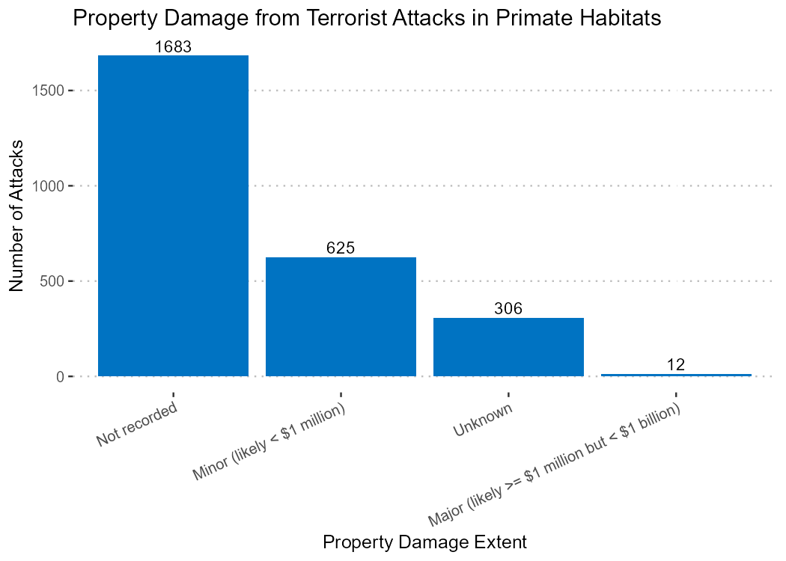
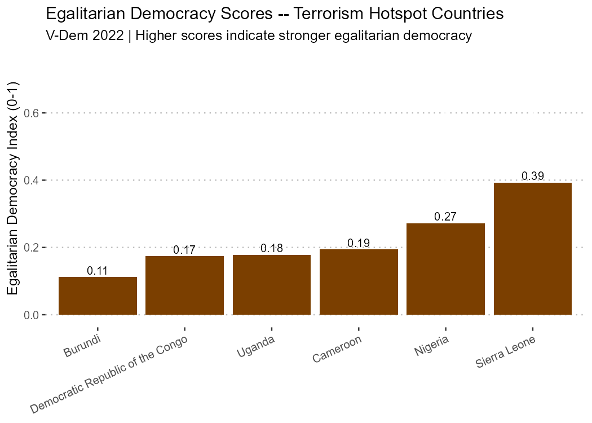

Terrorism Endangers Ape Conservation
Executive Summary
Problem: Apes are among the most endangered mammals on earth, threatened by bushmeat hunting, habitat loss, and disease transmission. Terrorism is an overlooked driver of all three – yet its geographic relationship to primate habitats has not been mapped or quantified. The assumption that conservation and conflict are separate problems has left a critical stressor unaddressed.
Approach: Global Terrorism Database (GTD) attack records for sub-Saharan Africa were spatially joined to primate habitat range shapefiles in QGIS, isolating the 2,626 attacks that occurred directly within ape habitats. Attack type, lethality, and property damage were analyzed in R. V-Dem egalitarian democracy scores for 2022 were used to characterize the political context of terrorism hotspot countries. The map places all components in geographic context, with insets highlighting the three highest-concentration regions.
Insights: Terrorism in sub-Saharan Africa concentrates in regions that overlap directly with primate habitats, and those regions share a common political profile: low egalitarian democracy scores, high poverty, and significant inequality. The mechanism linking terrorism to ape endangerment is indirect but powerful: displacement of people into primate habitats drives bushmeat hunting for food, deforestation for fuel and settlement, and disease transmission in both directions. With 1,330 of 2,626 attacks resulting in fatalities and the Allied Democratic Forces alone responsible for 306 incidents, the scale of the problem is substantial.
Significance: Apes are our closest living relatives. Their behaviors illuminate our shared evolutionary history, and their loss would cause cascading ecological damage in some of the world’s most biodiverse regions. Addressing terrorism as a conservation stressor requires the same attention to poverty, inequality, and governance that drives counter-terrorism efforts – making this a problem where security policy and conservation policy are the same problem.
Key Findings
- 2,626 terrorist attacks occurred within primate habitat ranges in sub-Saharan Africa; 1,330 resulted in fatalities totaling over 11,000 individuals killed.
- The DRC-Uganda-Burundi border region is the critical hotspot – the Allied Democratic Forces alone account for 306 attacks (17% of fatal incidents), and the DRC ranked 9th globally in the 2020 Global Terrorism Index with a 58% rise in incidents in 2019.
- All six hotspot countries score in the lower range of the V-Dem egalitarian democracy index (0.107–0.394), consistent with the poverty and inequality conditions that drive terrorism in sub-Saharan Africa.
- Property damage from attacks is predominantly minor or not recorded – the primary threat mechanism is human displacement and death, not infrastructure destruction.
- Three distinct hotspot regions require different intervention strategies: the DRC-Uganda-Burundi corridor (insurgency and ethnic conflict), the Nigeria-Cameroon border (wealth inequality and corruption), and Sierra Leone (economic instability and political fragility).
Research Question
Where do terrorist attacks occur within primate habitats in sub-Saharan Africa, and what political and economic conditions characterize those regions?
Research Answers
The Map
The map below shows all terrorist attacks that occurred within primate habitat ranges in sub-Saharan Africa. Attack type is distinguished by color and lethality is scaled by point size. Three insets highlight the highest-concentration hotspot regions.
Figure 1. Terrorist Attacks Within Primate Habitats, Sub-Saharan Africa

Interpretation: Attacks occuring in areas where apes are prevalent cluster in three distinct regions that correspond to areas of documented political instability and ape conservation concern: the DRC-Uganda-Burundi border corridor in the east, the Nigeria-Cameroon border in the center, and Sierra Leone on the west coast. The insets make the density of attacks within these corridors visible at a scale where individual incidents and their spatial relationship to habitat boundaries can be assessed.
Property Damage and Attack Character
The distribution of property damage from attacks within primate habitats reveals the primary threat mechanism: displacement and death, not infrastructure destruction.
Figure 2. Property Damage Extent from Attacks Within Primate Habitats

Interpretation: The overwhelming majority of attacks either caused no recorded property damage (1,683) or minor damage under $1 million (625). Only 12 attacks caused major property damage. This pattern indicates that terrorism’s threat to ape conservation operates primarily through human consequences – deaths, injuries, and displacement – rather than through direct environmental destruction. People displaced by violence seek food from bushmeat and shelter from forest clearing; this is the pathway to habitat loss.
Political Context: Democracy and Governance in Hotspot Countries
All six countries identified as terrorism hotspots in the map share a common political profile – low egalitarian democracy scores relative to the African average.
Figure 3. Egalitarian Democracy Scores, Terrorism Hotspot Countries (V-Dem 2022)

Interpretation: Burundi scores lowest (0.107), followed by Uganda (0.173), DRC (0.182), and Cameroon (0.191). Nigeria (0.266) and Sierra Leone (0.394) are comparatively higher but still in the lower half of the African range (0.036–0.634). Low egalitarian democracy scores reflect conditions of poverty, inequality, and weak institutional protection – precisely the conditions identified as drivers of terrorism in sub-Saharan Africa. This is not coincidence: the same governance failures that generate terrorism also undermine the stable land tenure, economic opportunity, and law enforcement needed for effective conservation.
Hotspot Profiles
DRC-Uganda-Burundi Corridor (eastern inset): The most critical region. The DRC ranked 9th globally in the 2020 Global Terrorism Index, with terror incidents rising 58% in 2019. The Allied Democratic Forces were responsible for 17% of the 1,330 fatal attacks in the dataset. War has increased deforestation (for fuel) and bushmeat hunting (for food). The DRC is positioned for economic success through natural resource wealth, but internal conflict hampers prosperity. At its borders, Burundi is among the world’s poorest countries, with longstanding ethnic conflict between Hutu and Tutsi populations. Uganda has achieved relative stability but its north remains an epicenter of Lord’s Resistance Army activity – a group also active in the DRC.
Nigeria-Cameroon Border (center inset): Both countries have significant wealth and educated populations, but Cameroon struggles with corruption and multiple insurgent groups, and Nigeria with ethnic conflict, land-use rights, and the unequal distribution of oil wealth. Despite conservation efforts in Cameroon to protect apes, people displaced by conflict are encroaching into protected areas and engaging in deforestation and bushmeat hunting.
Sierra Leone (western inset): Rich in mineral wealth, with a history of civil war and recent growth and stability. However, most goods are imported, and inflation has exacerbated conflict and increased poverty, culminating in an attempted coup at the end of 2023.
Pathways and Solutions
Natural resources, environment, and terrorism are linked through displacement. In sub-Saharan Africa, poverty and inequality drive terrorism – but terrorism also promotes poverty and inequality. The cycle is self-reinforcing, and apes are caught in it.
Solutions exist beyond conventional counter-terrorism. Tourism generates revenue for impoverished regions with extraordinary biodiversity, but requires the safety conditions that terrorism destroys. Community-based conservation models that share tourism revenue with local populations have demonstrated success, but conservation approaches that disenfranchise traditional forest inhabitants from traditional resources can deepen conflict. Educational investment – particularly directed at women – addresses the poverty conditions at the root of both terrorism and conservation failure.
Study Design
Data Source: Three data sources: (1) Global Terrorism Database (GTD), University of Maryland START Center – incident-level terrorism records for sub-Saharan Africa; (2) Mammal Diversity Database (2020) and Map of Life (2021) – primate habitat range shapefiles; (3) V-Dem Institute – egalitarian democracy index scores for African countries, 2022.
Data Handling: GTD records filtered to sub-Saharan Africa and further to the map extent (africa-gtdbData-subset.csv). Primate habitat shapefiles imported into QGIS and used as a spatial filter via point-in-polygon intersection to isolate attacks occurring within habitat ranges (2,626 records, exportPointIntersectionTable.csv). Property damage extent recoded: empty values (not recorded) distinguished from coded “Unknown.” V-Dem data filtered to Africa, 2022; ISO3 country codes added via countrycode package for potential merging.
Analytical Approach:
- Downloaded GTD records for sub-Saharan Africa; filtered to map extent
- Imported GTD points and primate habitat shapefiles into QGIS
- Performed point-in-polygon spatial join to isolate attacks within habitat ranges
- Symbolized map by attack type (color) and lethality (point size); composed layout with satellite basemap and regional insets
- Exported intersection table from QGIS for R analysis
- In R: cleaned intersection data; tabulated perpetrator groups and property damage extent; generated figures
- Extracted V-Dem egalitarian democracy scores for Africa 2022; filtered to hotspot countries; generated figure
Projection: Web Mercator. Basemap: ESRI World Imagery (satellite).
Note on basemap: The ESRI World Imagery basemap is an XYZ tile service and cannot be packaged into a geopackage. To reproduce the map with the original basemap, add a new XYZ tile connection in QGIS:
- Name: ESRI World Imagery
- URL:
https://server.arcgisonline.com/ArcGIS/rest/services/World_Imagery/MapServer/tile/{z}/{y}/{x} - CRS: EPSG:3857
- Min zoom: 0 / Max zoom: 17
Data & Code
Repository: github.com/kchoover14/mapping-terrorism-ape-conservation
Available in this repository: QGIS geopackage (layers, symbology, primate habitat shapefiles, and data), a separate csv of the GTD data subset used for the map (africa-gtdbData-subset.csv), the QGIS point-in-polygon intersection export (exportPointIntersectionTable.csv), V-Dem Africa 2022 data (demAf2022.csv), R script, and final map with layout applied (not available to export in geopackage).
Source data: GTD records were downloaded when publicly available from the University of Maryland START Center (note: GTD access now requires registration). Primate habitat shapefiles are from the Mammal Diversity Database (Version 1.2, Zenodo) and Map of Life (2021). V-Dem data accessed via the vdemdata R package.
Tools & Technologies
Languages & Tools: R, QGIS, Web Mercator projection, ESRI World Imagery basemap
R Packages: ggplot2, dplyr, janitor, ggpubr, vdemdata, countrycode
Expertise
Domain Expertise: geospatial analysis | analytical mapping | conflict data | primate conservation | political ecology | V-Dem democracy indicators | sub-Saharan Africa
Transferable Expertise: Demonstrates integration of geospatial analysis, open-source conflict databases, and political indicators to surface the structural conditions driving a conservation crisis – an approach applicable to any domain where environmental outcomes are shaped by political and security context.